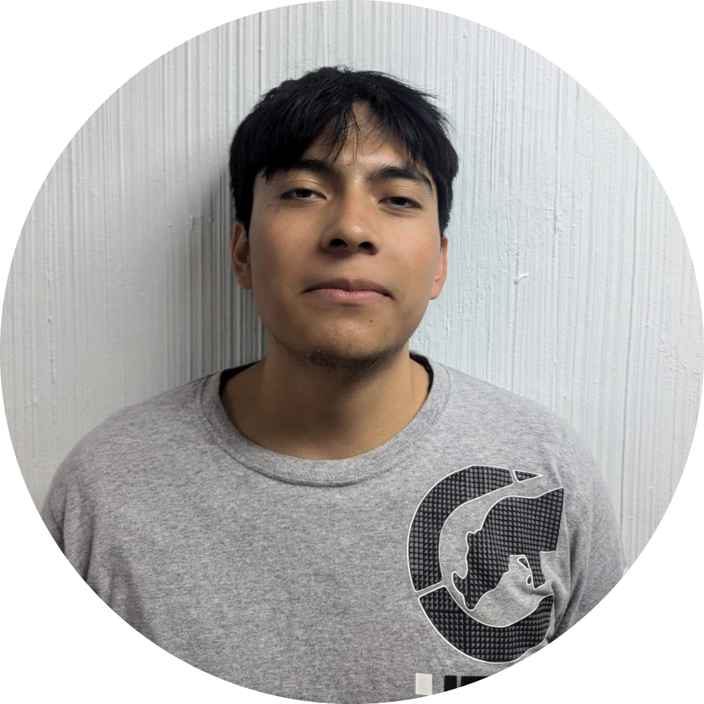

Contacto
Habilidades
Educacion
|
Acerca de miSoy un Estudiante en Desarrollo de Software. Experiencia Laboral
|
|  |
Uriel
|
Contacto
Habilidades
Educacion
|
Acerca de miSoy un Estudiante en Desarrollo de Software. Experiencia Laboral
|
 (56) 3701 8289
(56) 3701 8289 urgamer106@gmail.com
urgamer106@gmail.com urielnm10
urielnm10